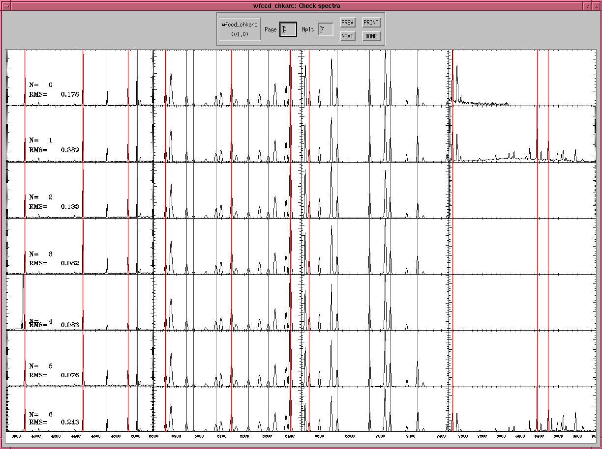

Screen shot of wfccd_chkarc

- The red lines indicate the position of standard He,Ne arc lines.
If your lines don't line up with these, there is a problem.
- Also, the RMS should be less than 0.3 for most of the slits. The
ones that extend to 1micron do show larger values, however.
2004-06-10